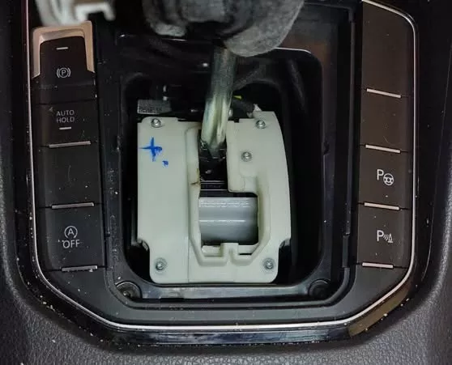
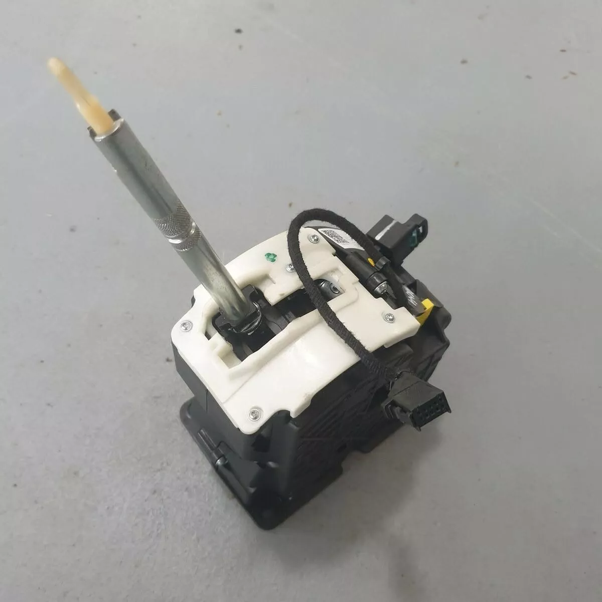
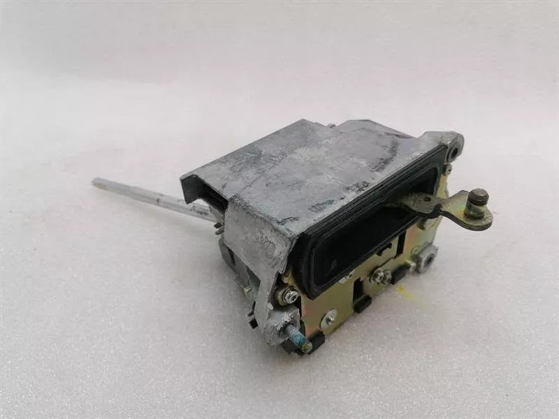
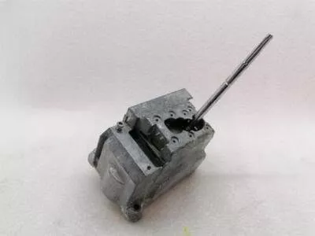
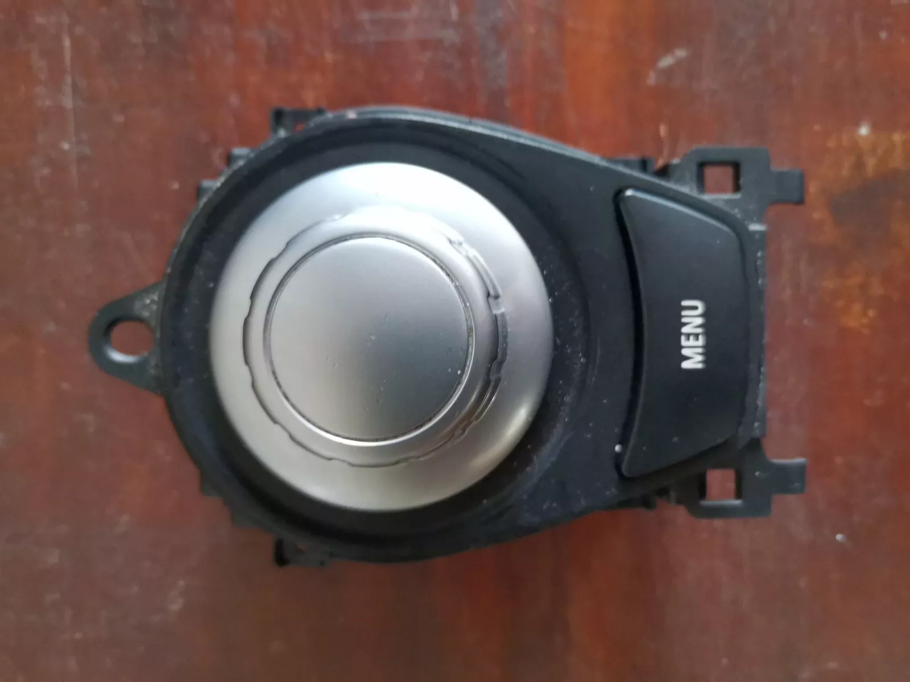
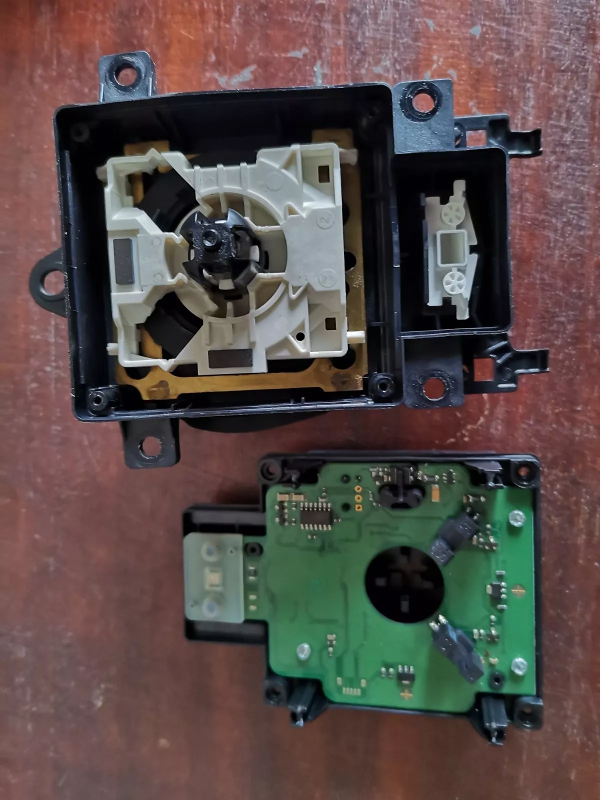

Блокирал ESM Селектор (MB)
Лостът отказва да излезе от позиция Parking, липсва индикация на таблото или колата не пали.
- Отключване от позиция "P"
- Смяна на дефектирали оптрони
- Възстановяване на платката (PCB)
Автомобилът е блокирал на "P"? Скоростната кутия влиза в авариен режим? Или iDrive контролерът на Вашето BMW не реагира? Извършваме експертен хардуерен ремонт на ESM/ISM модули и iDrive конзоли. Решаваме проблема радикално, без нужда от закупуване на скъпи части втора употреба и препрограмиране.
Лостът отказва да излезе от позиция Parking, липсва индикация на таблото или колата не пали.
Съобщение "Drive to workshop without changing gear". Невъзможност за смяна на предавките.
Контролерът върти на празно без съпротивление, не реагира изобщо или бутоните отказват.
Четене и локализиране на точния проблем със специализиран дилърски софтуер.
Ако iDrive контролерът ви върти на празно, не реагира на натискане, изключва се сам или прави каквото си иска, имаме точното решение. Без театър и без да ви пробутваме цяла конзола за нова кола.
Извършваме цялостен хардуерен ремонт на BMW iDrive конзоли и джойстици. Отстраняваме дефектите по енкодера (въртящия механизъм), електрониката и бутоните, така че системата ви да работи гладко и надеждно, както в първия си ден.
Когато електрониката дефектира, първият съвет по форумите често е: "Вземи си от морга". Това е сериозна техническа и финансова грешка.
Електронните селектори и ISM модулите при Mercedes (заради FBS имобилайзерната защита), както и някои iDrive системи при BMW, са обвързани със софтуера на конкретния автомобил. Вие не можете просто да "прехвърлите" модул от друга кола и да очаквате да работи.






Закачаме автомобила (или четем модула на стенд), за да потвърдим електронния дефект и конкретните кодове за грешки.
Разглобяваме модула. Платката се почиства, а дефектиралите оптични сензори, енкодери или елементи се подменят чрез прецизно микроспояване.
Сглобяваме механизма, проверяваме живите данни за нормална работа без забавяне и монтираме обратно в автомобила.
Обадете ни се за консултация. Ако лостът на Mercedes-а не излиза от "P", можем да ви обясним процедурата за аварийно освобождаване, за да може колата да се качи на репатрак или да се докара до сервиза. Също така, може ваш доверен механик да демонтира модула и да ни го донесете.
Да, извършваме хардуерен ремонт на iDrive контролери за повечето разпространени модели на BMW (E-серии, F-серии и G-серии), независимо дали става въпрос за CCC, CIC или NBT системи. Най-честият проблем с превъртането на празно се отстранява успешно.
Ако ни донесете свален селектор, ISM модул или iDrive конзола, самият електронен ремонт се извършва в рамките на 1 до 2 работни дни. Ако автомобилът се докара при нас за цялостна услуга (демонтаж, ремонт, монтаж), времето се уточнява при приемане.
Да. Ние не "закрепяме" положението, а подменяме проблемните електронни компоненти с чисто нови. Всеки успешно ремонтиран модул получава гаранция за качество.
Спестете си излишни нерви и хиляди левове за нови модули. Свържете се с нас за професионална консултация и трайно решение.
Обадете се на +359 878 915 118